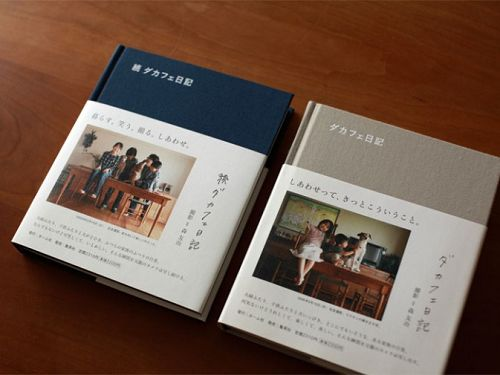
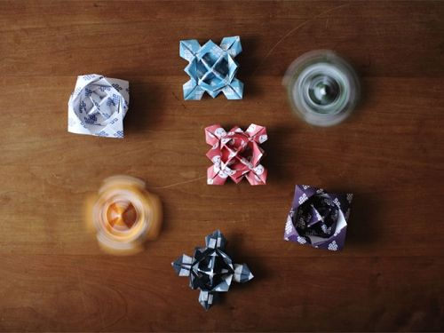
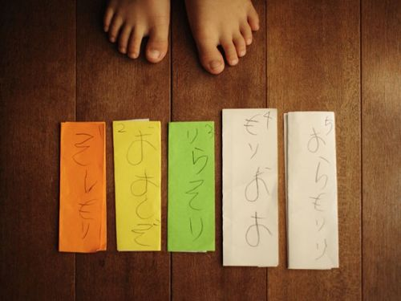
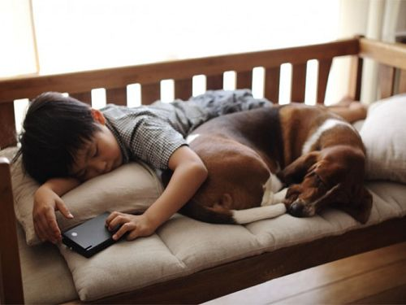

原文来自：http://fotomen.cn/
对一般人来说，生活照常常是一个搬不上台面的名词。如果有影友拿了神兵利器却拍得毫无感觉，大家会说他拍得根本是“生活照”。个中原因不外乎是因为生活照没有太多技巧发挥的空间，不太会用到摇黑卡、长曝、补眼神光、也没有太多火力展示的空间，只有一些很私密的记忆。
即便如此，拍生活照的人少吗？不见得。否则怎么每位当爸的都有一台单反？只是摄影论坛上的大师都会告诉你，这种东西称不上“作品”。就算是作品，也得排在风景跟人像之后，像次等公民一样。然而众所周知所谓的人像跟人文摄影，最重要的就是要接近被摄者，理解被摄者。其实无论你如何去深入了解一个陌生人，又怎能比得上你对亲朋好友的理解？如果连拍摄亲朋好友都拍不出情感，所谓的人文照片也不过是固定形式的复制。街拍跟偷拍也拍不出什么分别。
在日本有许许多多知名的摄影师以拍摄“自己”生活周遭题材为主，包括梅佳代、川内伦子等等。大师荒木经维的作品虽然有着一些耸动的元素包装着，说到底那也就是他的生活。这次要介绍给大家的也是这样一个摄影师，他就是以日记式摄影而著称的森友治。
森友治和《DaCafe日记》
持续拍摄家庭生活的照片，就像文学作品里的“私小说”一般，动不动很可能堕落为自我满足的牺牲品。曰本每逢过年，印有“全家福”的贺年卡满天飞，平庸得令人提不起精神去细看。可森友治的《dacafe曰记》却有着无形的，吸引人情不自禁地前去观赏、甚至是偷窥的魔力。
森友治，1973年生人，生长于福冈。毕业于北里大学兽医畜产系畜产专业，主攻猪的行动学。是“了解猪心情”的摄影师+设计师，以摄影和美术设计为职业。难得一见的森友治本人。

有人说，森友治的作品就象融化了的奶糖。这比喻确实贴切极了，不仅有奶糖化开时的柔和色彩，更有那种四溢的淡淡甜蜜。
这些不起眼的生活有了一种了不起的幸福力量，加上森友治表达这种力量的方式是那样的看似朴素和平常，正是那种特有的寂静和清淡，反衬出了无与伦比的浓郁情感，一定是有一颗温暖和欢喜的心的人才能看见这样的人间风景。
始于2002年的“DaCafe日记”记录的是一个普通日本家庭的日常生活。这个家庭由一对夫妇和两个孩子组成，另外还有一条大狗。爸爸森友治用自己手里的照相机，将平凡而安静的生活记录下来，发到网上。一开始的日志以妻子的照片为主，博客的名字DaCafe的原意是与阿达（妻子在大学里的昵称）一起喝咖啡。

在两个孩子诞生之后，淘气的儿子空和文静的女儿海逐渐成了主角。尤其是空，他的各种怪像让这个家庭看上去充满了乐趣。妻子、女儿和狗则表现出安静的一面。在父亲的带领下，海和空偶尔也拿起相机给父母拍照。敏感的观察力、特别的角度、对家人的爱意，让这位爸爸的照片看上去又温馨又有趣。虽然更新频率算不上高，但每天都有将近3万人前去浏览。此外“DaCafe日记”还被评为2006年度日本博客大奖摄影类最佳博客，并于去年下半年印刷成书，销量很不错。







3 Responses to “了不起的生活照”
2010-12-09
其实也归功于日式家庭干净而温暖的布置。环境在照片里的作用很重要哇。。。
2010-12-09
我是很抵制影楼产品的，喜欢花絮式的照片
2010-12-10
老早就去过他们的网站，就是家的味道。
不几年，小朋友就长大了。
和美、温馨、舒服，就是这样的感觉。
Leave A Reply
存档只读，评论已关闭。